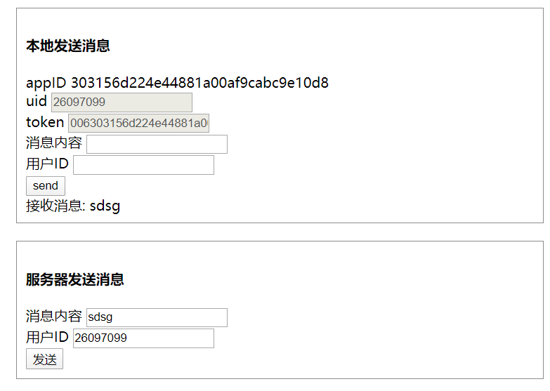

3. RTM发送消息¶
测试网址。如下截图

上部用于浏览器端调用rtm webclient进行本地发送消息。不能给自己发送消息,只能发消息给其他用户。
下部分是向后台发送消息，可以发送给任何人。
数据流向
graph TD
A[Client] -->|send message via http| B(Logic)
B --> C{rabbitMq}
C -->|One| D[rtm client on backend]
D -->|RTM| E[User]
3.1. rtm获取token¶
[POST] /dapi/agora/rtm-option
参数示例
{
uid:'12345',
channel:'cha_12356',
}
| 参数 | 含义 | 必填 |
|---|---|---|
| uid | 用户的uid | 是 |
| channel | 频道 | 否 (可以不用频道，加入到全局环境中) |
返回
{
"success": true,
"data": {
"appID": "303156d224e44881a00af9cabc9e10d8",
"uid": "1234",
"token": "006303156d224e44881a00af9cabc9e10d8IADbkoI7G6PpyKYhfG8nW2MqV3CI6b3MVIyYmSnszC29y6Pg45sAAAAAEAAexvQE7alCXgEA6APFWkFe"
}
}